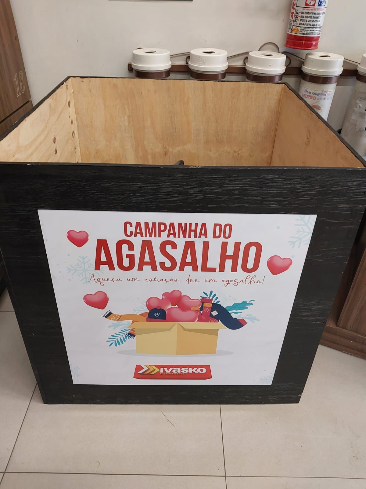
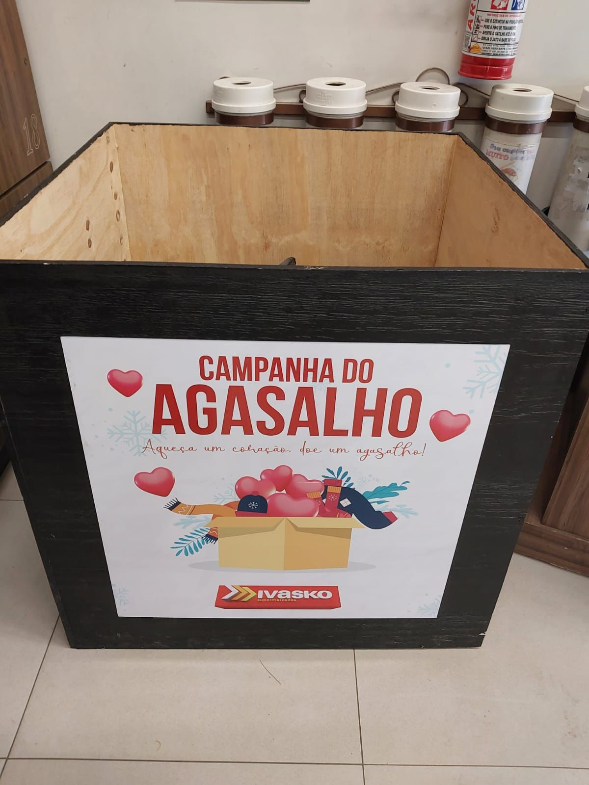

Histórias de inspiração
ONG 4 patas
A ONG "4 Patas" surgiu em torno de 2012, fundada por um grupo de amigos com uma nobre missão: auxiliar os animais abandonados da região. Seu objetivo principal é realizar o controle populacional dos animais de rua ou semi-domiciliados, encaminhando-os para castração e, posteriormente, buscando oportunidades de adoção responsável.
Com um corpo de aproximadamente 30 associados, sendo que 3 deles são voluntários ativos, a ONG "4 Patas" concentra seus esforços na proteção e bem-estar dos animais desamparados.
Para sustentar suas atividades e promover o alcance de sua causa, a organização arrecada recursos financeiros através de diversas fontes. Uma delas é por meio de mensalidades pagas pelos associados, que contribuem com uma quantia regular para apoiar os projetos e ações desenvolvidas.
Além disso, a ONG "4 Patas" se empenha na realização de outros projetos e eventos para angariar fundos. Um exemplo é a organização de rifas, atividade que não só capta recursos, mas também envolve a comunidade local e sensibiliza para a importância da proteção animal.
A ONG "4 Patas" é uma força transformadora na vida dos animais desprotegidos, proporcionando-lhes cuidados médicos, amor e atenção. Seu trabalho é guiado pelo compromisso inabalável em melhorar a qualidade de vida desses seres inocentes e garantir que possam encontrar lares amorosos e seguros.
Ao longo dos anos, a ONG "4 Patas" tem construído uma valiosa rede de apoio e parcerias, mostrando que a união de esforços é fundamental para alcançar resultados significativos na proteção e defesa dos animais abandonados. Seu trabalho inspira e incentiva a comunidade a se envolver, demonstrando que juntos podemos criar um mundo mais compassivo e solidário para nossos amigos de quatro patas.


Campanha do agasalho do mercado Ivasko
Ivasko é um mercado que atua em São Mateus do Sul, e há muitos anos, tem uma comovente ação social sem fins lucrativos foi criada com o objetivo de beneficiar aqueles que mais precisam. Nesta iniciativa, são arrecadadas roupas de frio e agasalhos para serem doadas a entidades beneficentes. Assim como em todas as campanhas do Ivasko, tudo começou com a simples vontade de estender a mão a alguém em necessidade.
O coração dessa ação é a generosidade e a compaixão que se encontram nas pessoas envolvidas. Além dos esforços do mercado, diversos funcionários também se unem, dedicando seu tempo e contribuindo para essa nobre campanha.
A cada ano, essa iniciativa cresce e toca o coração de mais pessoas, mostrando que, quando unimos nossas forças, podemos fazer uma diferença significativa na vida daqueles que enfrentam adversidades. A solidariedade é o elo que conecta a comunidade do Ivasko e as entidades beneficiadas, proporcionando ajuda e calor humano aos que mais precisam nos períodos mais frios.
A ação social do mercado Ivasko é uma prova concreta de como pequenos gestos podem ter um impacto imensurável. Cada peça de roupa doada aquece o corpo e o coração de quem a recebe, mostrando que, juntos, podemos fazer a diferença e construir uma sociedade mais empática e cuidadosa. Esse exemplo inspirador ressalta que, quando a vontade de ajudar se une à ação concreta, a bondade se multiplica e abre caminho para um mundo mais solidário e acolhedor.
 
